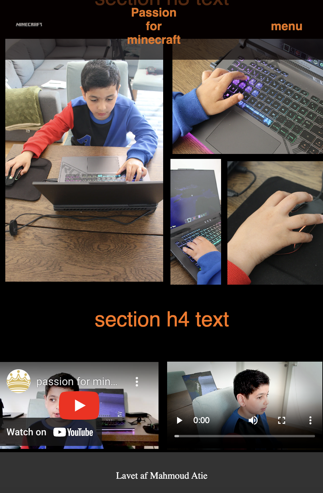

Desktop

Final product

Min 9-årige søn er helt vild med Minecraft: Education Edition. For ham er det mere end bare et computerspil; det er en sjov måde at lære på. Han har bygget alt fra historiske monumenter til komplekse matematiske modeller, og han bruger spillet til at løse problemer og arbejde sammen med andre. At se ham dykke ned i Minecraft: Education Edition får mig virkelig til at forstå, hvordan spil kan være en kraftfuld læringsværktøj.
Jeg brugte Adobe Premiere til at redigere interviewet. Det var som at forme et råt materiale til en sammenhængende historie. Jeg klippede og arrangerede klip, tilføjede effekter og finjusterede lyden for at skabe den rette stemning. Når jeg ser det endelige resultat, føler jeg virkelig, at jeg har fanget øjeblikket på en meningsfuld måde.